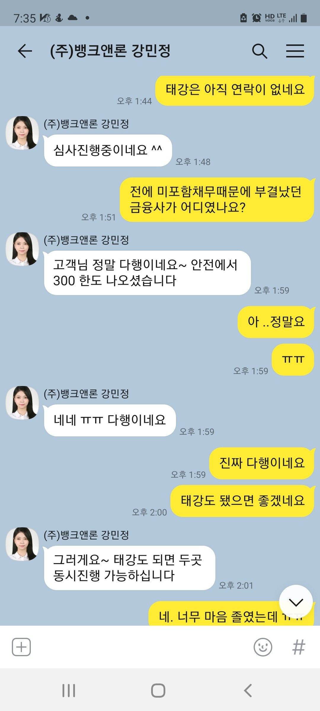
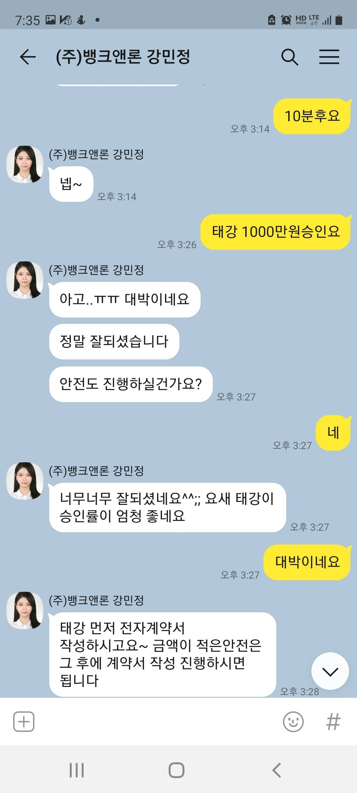
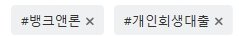

[개인회생자대출] 강민정상담사님 대출후기(재회생자)
재직형태:직장인
재직기간:1년2개월
사대보험:유
소득:월270만
신용등급:100점
채무내역:없음
필요서류:원초본,신분증,통장앞면,통장내역3개월,건강보험득실확인서,납부내역서,채권자목록
기대출은 없었지만 소득확인이 정상급여 1달270만 찍힌거 외에는 직장 특이사정으로 시지원금 때문에 통장에 소득확인이 어려웠습니다. 심사전화시 정확하게 설명하였고 강민정 상담사님께서 긍정심사로 적극 얘기해주셔서 km,앤알 두곳먼자 부결...태강,안전 두곳뿐이 남지않았던상황...돈은 꼭필요한데 부결의 두려움이 엄습해왔지만 기적적으로 안전 300만원승인이 되고 태강은 무려 1000만원승인되어 총 1300만원 여유자금을 마련할수있었습니다. 정말 악조건이였고 재회생에,건강보험도 회사에서 두달이나 미납을 한상황인지라 정말 안될줄알았는데 승인이 났네요.
되도록 미리 상담받으시고 부결사유없이 모든 서류 완벽히 갖추어 진행하시면 좋은결과가 있으실겁니다..그리고 저처럼 악조건에서도 상담사님의 넓은 지식으로 승인률높은 금융사 초이스해서 심사봐준게 도움이 된거같네요.
뱅크앤론 감사합니다. 강민정상담사님 감사합니다.


